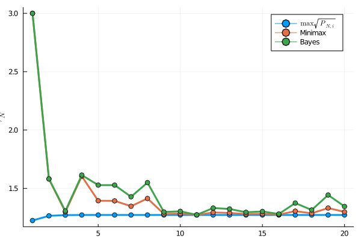

Example
The example in the article is restated below, with a self-contained code block to reproduce the results.
\[\begin{aligned} x_{t+1} & = i\begin{bmatrix}1.1 & -0.5 & 0.1 \\ 1 & 0 & 0 \\ 0 & 1 & 0\end{bmatrix}x_t + \begin{bmatrix} -1\\ 2 \\ 3\end{bmatrix}u_t + w_t \\ y_t & = \begin{bmatrix}1 & 0 & 0\end{bmatrix}x_t + v_t \\ x_0 & = 0, \end{aligned}\]
where $i\in\{-1,1\},\ u_t = sin(t/5)$, $v_t$ and $w_t$ are unit intensity, uncorrelated, Gaussian white noise. Further, $Q = I,\ R = I,\ P_0 = I$.
using Hypatia
using LinearAlgebra
using MinimaxEstimation
using Plots
using Random
Random.seed!(10)
n_steps = 20
F = [1.1 -.5 0.1
1 0 0
0 1 0]
B = [-1;2;3]
H = [1 0 0]
x0 = [0; 0; 0]
Q = I(3)
R = 1
P = I(3)
gamma = 3
kf1 = KalmanFilter(x0, F, H,B, P, Q, R)
kf2 = KalmanFilter(x0, -F, H,B, P, Q, R)
mini = MinimaxMMAE(copy([kf1, kf2]), gamma, ()-> Hypatia.Optimizer())
bayesian = BayesianMMAE(copy([kf1, kf2]))
v = randn((1,n_steps))
w = randn((3, n_steps))
u(k) = sin(k/5)
y = zeros(n_steps+1)
Hx = zeros(n_steps+1)
y[1] = 0
Hx[1] = 0
yhat_mini = zeros(n_steps+1)
vals_mini = zeros(n_steps+1)
yhat_bayesian = zeros(n_steps+1)
yhat_mini[1]= predict(mini, false)[1][1]
yhat_bayesian[1] = predict(bayesian)[1]
x = x0
for k=1:n_steps
update!(mini,y[k], u(k))
update!(bayesian, y[k], u(k))
yhat_mini[k+1] = predict(mini, false)[1][1]
yhat_bayesian[k+1] = predict(bayesian)[1]
global x = F*x + B*u(k) + w[:,k]
y[k+1] = (H*x)[1] + v[k]
Hx[k+1] = (H*x)[1]
k +=1
end
print("||Hx - yhat_mini|| = ", norm(Hx - yhat_mini), "\n")
print("||Hx - yhat_bayesian|| = ", norm(Hx - yhat_bayesian), "\n")
print("||Hx_{n+1} - y_n|| = ", norm(Hx[2:end]-y[1:end-1]), "\n")
plot(
[Hx yhat_mini yhat_bayesian],
legend=:bottomright,
labels = ["Hx" "yhat_minimax" "yhat_bayesian"],
linewidth=3,
markershape = :o,
xlabel = "time-step",
ylabel = "Output")||Hx - yhat_mini|| = 4.59957984548839
||Hx - yhat_bayesian|| = 4.54841899392182
||Hx_{n+1} - y_n|| = 6.774439291265415
/home/runner/.julia/packages/GR/9Vi4m/src/../deps/gr/bin/gksqt: error while loading shared libraries: libQt5Widgets.so.5: cannot open shared object file: No such file or directory
connect: Connection refused
GKS: can't connect to GKS socket application
GKS: Open failed in routine OPEN_WS
GKS: GKS not in proper state. GKS must be either in the state WSOP or WSAC in routine ACTIVATE_WS